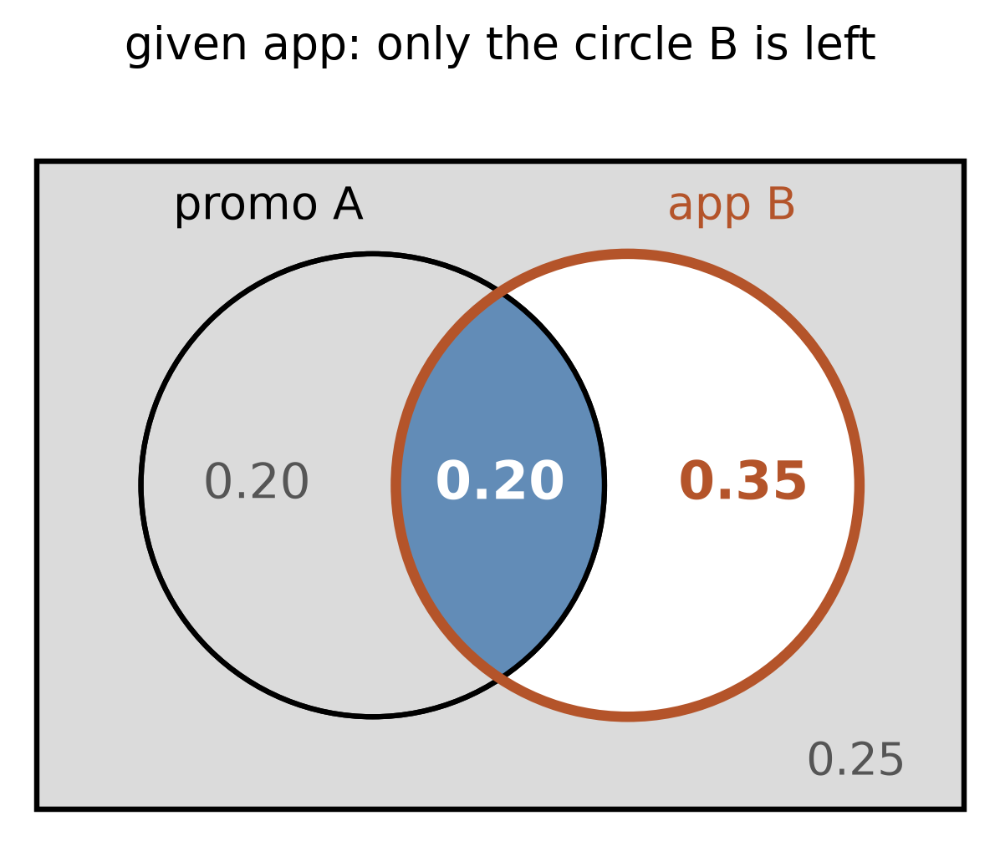
Lecture 2 · Probability Theory and Mathematical Statistics
2026-11-11
\[ \newcommand{\E}{\mathbb{E}} \newcommand{\Var}{\operatorname{Var}} \newcommand{\Cov}{\operatorname{Cov}} \newcommand{\Corr}{\operatorname{Corr}} \newcommand{\Prob}{\mathbb{P}} \newcommand{\R}{\mathbb{R}} \]
The store of Ex 1.3: 40% of orders use a promo code, 55% come through the app, 20% do both.
Priya, an analyst, sees a customer open the app. Still a 40% chance of a promo code?
No. Among app orders, promo-code ones are 0.20 out of 0.55: \(0.20/0.55\approx\) 0.36.
That one division is the starting point for this whole lecture.

Let \(\Prob(B)>0\). The conditional probability of \(A\) given \(B\) is \[\Prob(A\mid B)=\frac{\Prob(A\cap B)}{\Prob(B)}.\]
Read: “the probability of \(A\) given \(B\)”.
Once \(B\) has occurred, \(B\) is the new sample space and only \(A\cap B\) is still possible. Dividing by \(\Prob(B)\) brings the total back to 1.
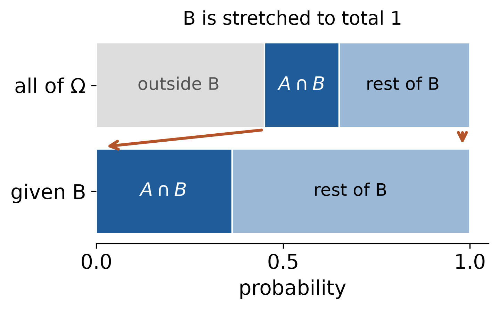
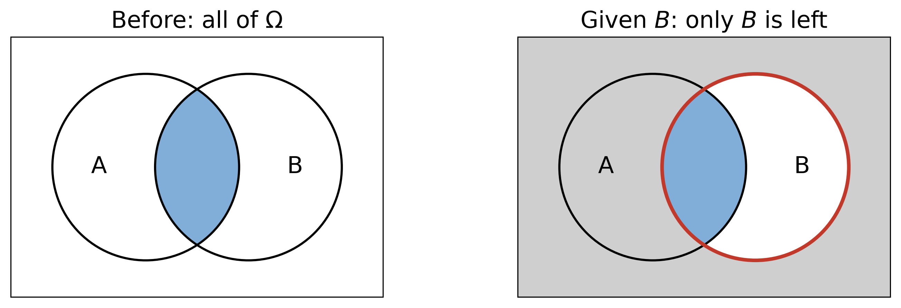
Everything outside \(B\) (grey) is ruled out. \(\Prob(A\mid B)\) is the share of \(B\) taken by \(A\cap B\).
With equally likely outcomes (Def 1.5) the division becomes a ratio of counts: \[\Prob(A\mid B)=\frac{|A\cap B|}{|B|}\]
Two dice, one red and one blue (Ex 1.4). You see only the red one: it shows a 6.
The sum is at least 10 exactly when blue shows 4, 5 or 6: 3 of the 6 outcomes left, probability \(1/2\). Before you looked it was \(6/36=1/6\).
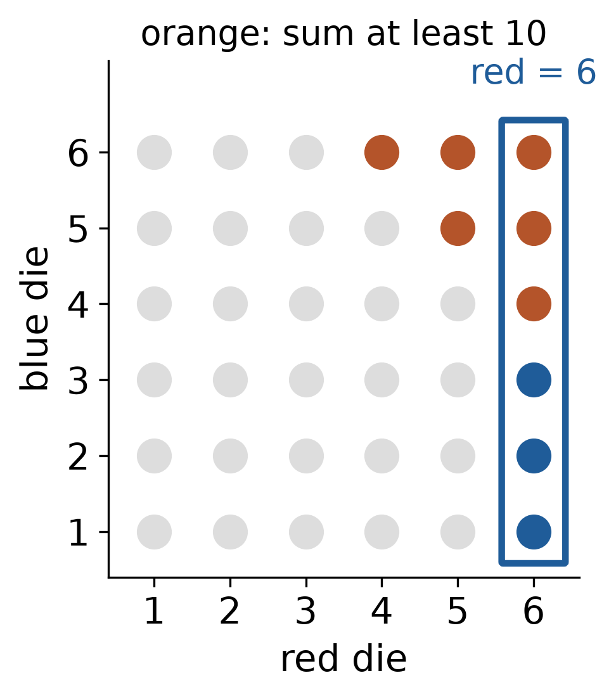
\(A\): promo code, \(B\): app. Find:
(a) \(\Prob(A\mid B)=\dfrac{0.20}{0.55}=\dfrac{4}{11}\approx\) 0.364
(b) \(\Prob(B\mid A)=\dfrac{0.20}{0.40}=\) 0.50
(c) From Ex 1.3(c), \(\Prob(A^c\cap B)=0.35\), so
\(\Prob(A^c\mid B)=\dfrac{0.35}{0.55}\approx\) 0.636
(a) and (c) add up to 1. No accident, see Thm 2.1.
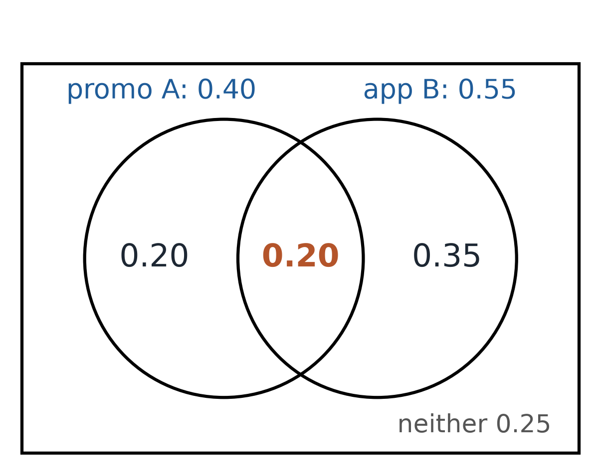
Same numerator 0.20, different denominator. (a) asks about app orders, (b) about promo-code orders.
True. “Half of promo-code users order through the app.” \(\Prob(B\mid A)=0.50\).
False. “Half of app users use a promo code.” \(\Prob(A\mid B)\approx 0.36\).
The most common mistake of this lecture. Newspapers make it too.
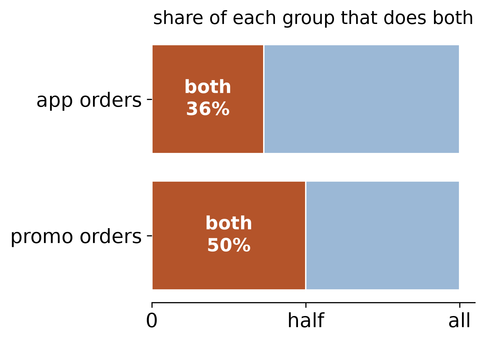
Fix \(B\) with \(\Prob(B)>0\). Then \(A\mapsto\Prob(A\mid B)\) satisfies the three axioms (Def 1.4), so every rule of Thm 1.2 holds for it: \[\begin{aligned}\Prob(A^c\mid B)&=1-\Prob(A\mid B),\\ \Prob(A_1\cup A_2\mid B)&=\Prob(A_1\mid B)+\Prob(A_2\mid B)-\Prob(A_1\cap A_2\mid B).\end{aligned}\]
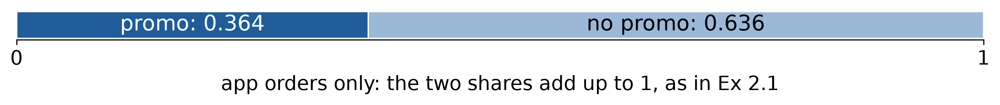
Proof: check the three axioms one by one. See the book, Section 2.1.
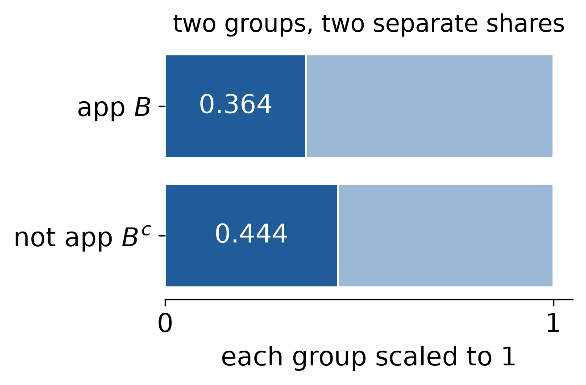
What share of the orders not through the app use a promo code?
Wrong: \(\Prob(A\mid B^c)=1-\Prob(A\mid B)\approx 0.636\)
Right: \(\Prob(A\mid B^c)=\dfrac{0.20}{0.45}\approx\) 0.444
\(1-\Prob(A\mid B)\) is \(\Prob(A^c\mid B)\). A new condition is a new group: the two numbers are unrelated.
Two dice are rolled and the sum is 8. What is the probability that at least one die shows a 3?
Given “sum 8”, five equally likely outcomes are left: \[(2,6),\ (3,5),\ (4,4),\ (5,3),\ (6,2).\]
Two of them contain a 3 (orange): \[\Prob(\text{a }3\mid\text{sum }8)=\frac{|A\cap B|}{|B|}=\color{#b4542a}{\mathbf{2/5}}\]
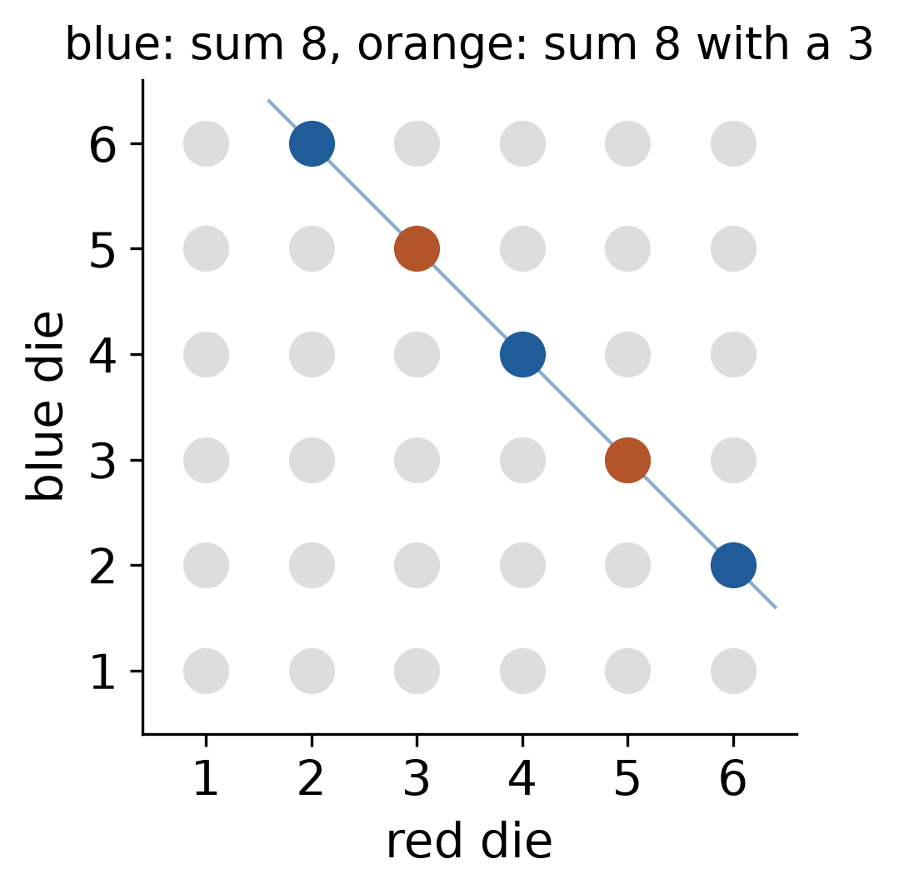
Turn the definition around: \(\Prob(A\cap B)=\Prob(B)\,\Prob(A\mid B)\). This is how most joint probabilities are found in practice. We think in steps: first one thing happens, then the next, given the first.
If \(\Prob(A)>0\) and \(\Prob(B)>0\), then \[\Prob(A\cap B)=\Prob(A)\,\Prob(B\mid A)=\Prob(B)\,\Prob(A\mid B).\] More generally, if \(\Prob(A_1\cap\dots\cap A_{n-1})>0\), \[\begin{aligned}\Prob(A_1\cap\dots\cap A_n)=\Prob(A_1)\,&\Prob(A_2\mid A_1)\,\Prob(A_3\mid A_1\cap A_2)\\&\cdots\Prob(A_n\mid A_1\cap\dots\cap A_{n-1}).\end{aligned}\]
Each factor answers one question: what is the chance of the next step, given everything so far?
Why it holds. By Def 2.1 each factor is a fraction, and each numerator cancels the next denominator. For three events: \[\Prob(A_1)\cdot\frac{\Prob(A_1\cap A_2)}{\Prob(A_1)}\cdot\frac{\Prob(A_1\cap A_2\cap A_3)}{\Prob(A_1\cap A_2)}=\Prob(A_1\cap A_2\cap A_3)\] Proof for any \(n\): see the book, Section 2.2.
Kemal’s department has 10 people. Ignore 29 February. Each birthday is equally likely to be any of 365 days, whatever the others’ birthdays are. What is the probability that all 10 are different?
Line the people up. \(A_k\): person \(k\) avoids the birthdays of persons \(1,\dots,k-1\).
Given the first \(k-1\) have \(k-1\) different birthdays, person \(k\) must avoid \(k-1\) days: probability \((365-k+1)/365\).
\[\Prob(\text{all different})=\frac{364}{365}\cdot\frac{363}{365}\cdots\frac{356}{365}\approx\color{#b4542a}{\mathbf{0.883}}\]
Two of the ten share a birthday with probability about 0.117.
Multiply out: \(\dfrac{365\cdot364\cdots356}{365^{10}}\). Counting ordered outcomes with the product rule (Thm 1.3) gives exactly this.
I find the chain easier to set up: you never have to decide what \(\Omega\) is.
Seminar 1, Problem 16: with 30 people “all different” is about 0.294, so a shared birthday has probability about 0.706.
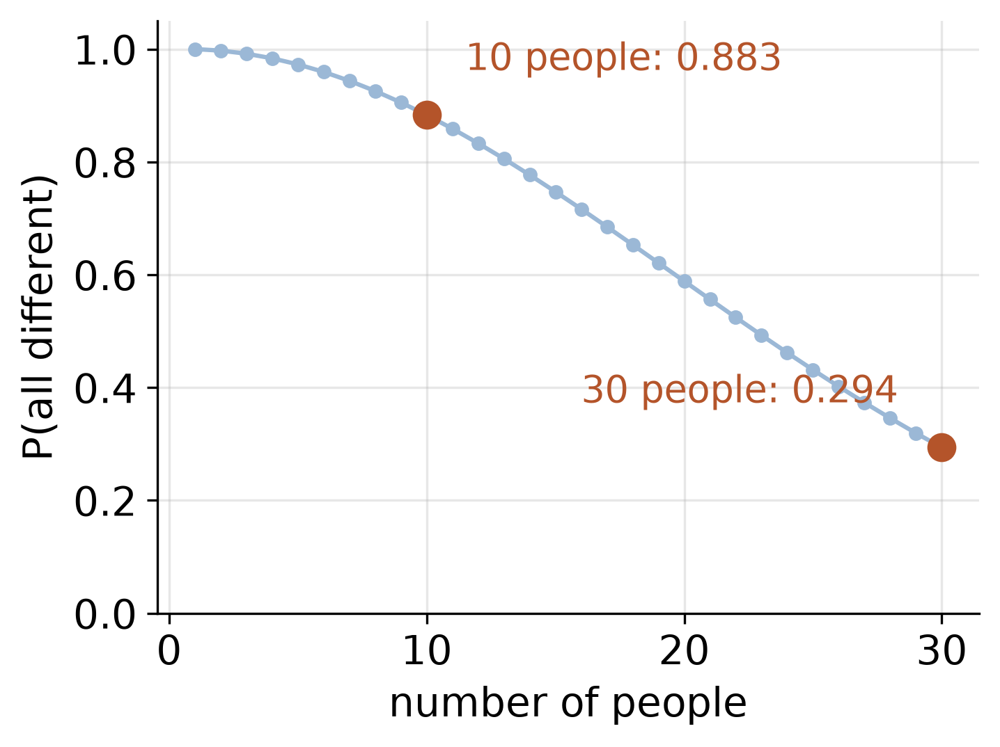
When an experiment happens in stages, draw a probability tree. Each branch carries the conditional probability of its step, given the path that leads to it.
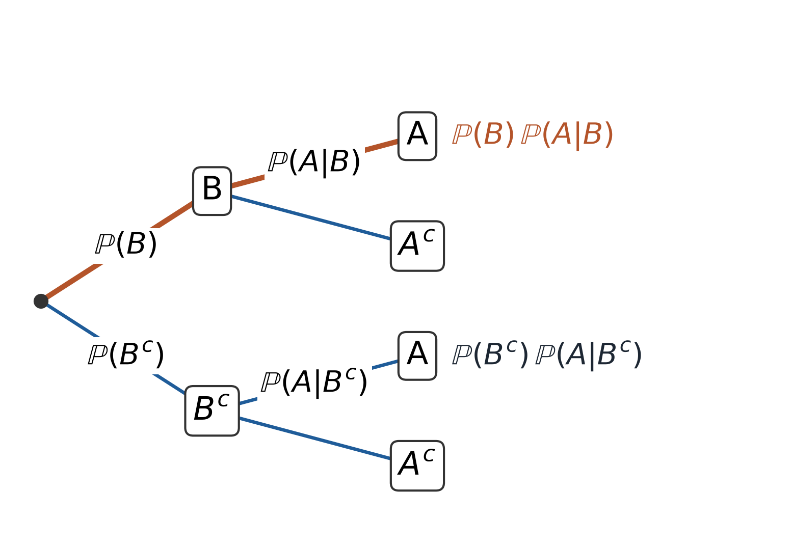
A hypothetical wholesaler in Kazan: a box of 12 LED bulbs, 3 faulty. Oksana tests two, one after the other, without putting the first back. P(both faulty)? P(exactly one)?
\(F_1\), \(F_2\): first, second bulb faulty. \(\Prob(F_1)=3/12\).
\(\Prob(F_2\mid F_1)=2/11\) and \(\Prob(F_2\mid F_1^c)=3/11\).
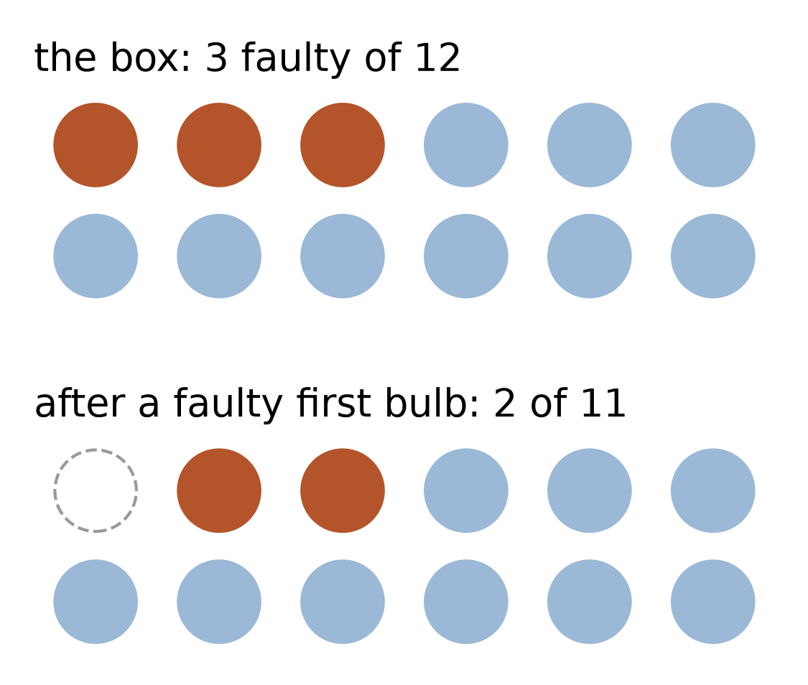
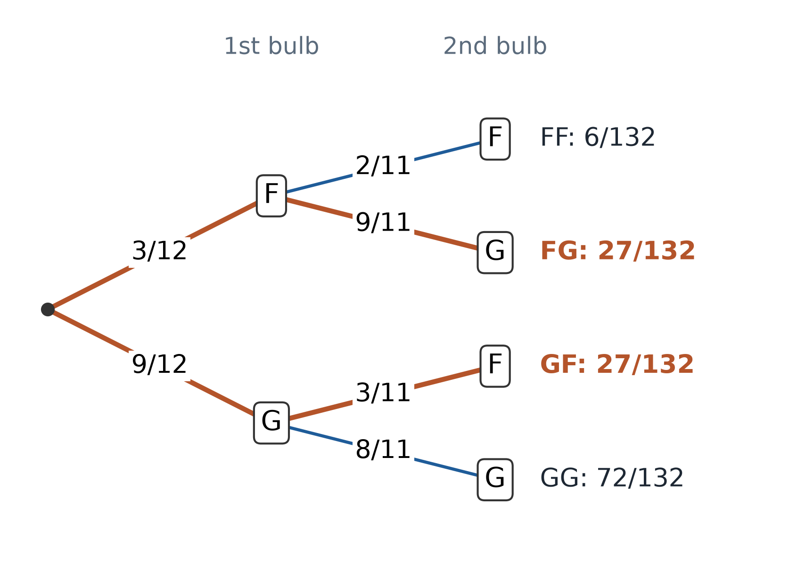
(a) Multiply along FF: \[\frac{3}{12}\cdot\frac{2}{11}=\frac{6}{132}=\frac{1}{22}\approx\color{#b4542a}{\mathbf{0.045}}\]
(b) Add two paths, FG and GF (orange): \[\frac{27}{132}+\frac{27}{132}=\frac{9}{22}\approx\color{#b4542a}{\mathbf{0.409}}\]
As in Ex 1.7: order does not matter, so take the \(\binom{12}{2}=66\) equally likely pairs.
Both faulty: \(\binom{3}{2}=3\) pairs, so \(3/66=\) 1/22.
Exactly one faulty: \(3\cdot 9=27\) pairs, so \(27/66=\) 9/22.
Same answers as the tree.
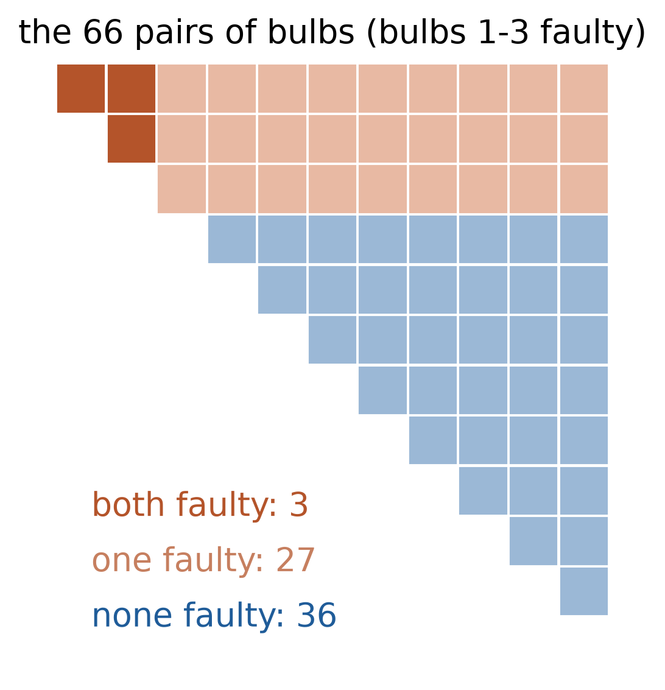
Add the two paths that end in F: \[\Prob(F_2)=\frac{3}{12}\cdot\frac{2}{11}+\frac{9}{12}\cdot\frac{3}{11}=\frac{33}{132}=\color{#b4542a}{\mathbf{1/4}}\]
The same as for the first bulb. The box has changed, but in a way you do not know about.
This sum is the law of total probability (Section 2.4).
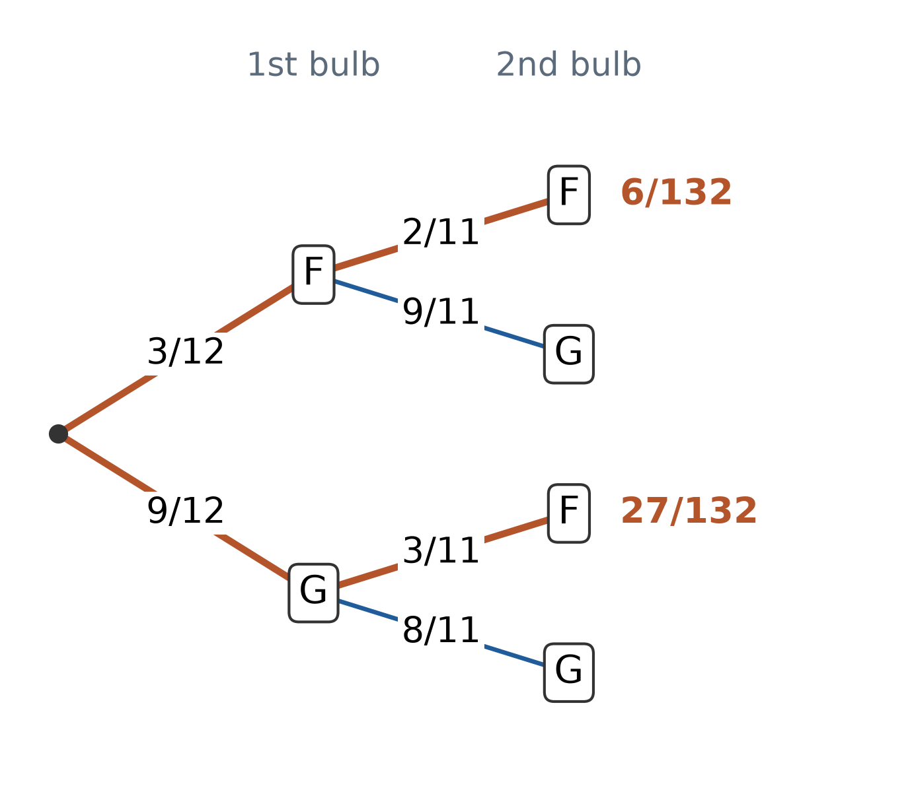
Sometimes the extra information changes nothing. A fair coin does not care what it showed last time.
\(A\) and \(B\) are independent if \(\Prob(A\cap B)=\Prob(A)\,\Prob(B)\).
If \(\Prob(B)>0\), this is the same as \(\Prob(A\mid B)=\Prob(A)\).
The product form is the definition: it is symmetric and works even when \(\Prob(B)=0\).
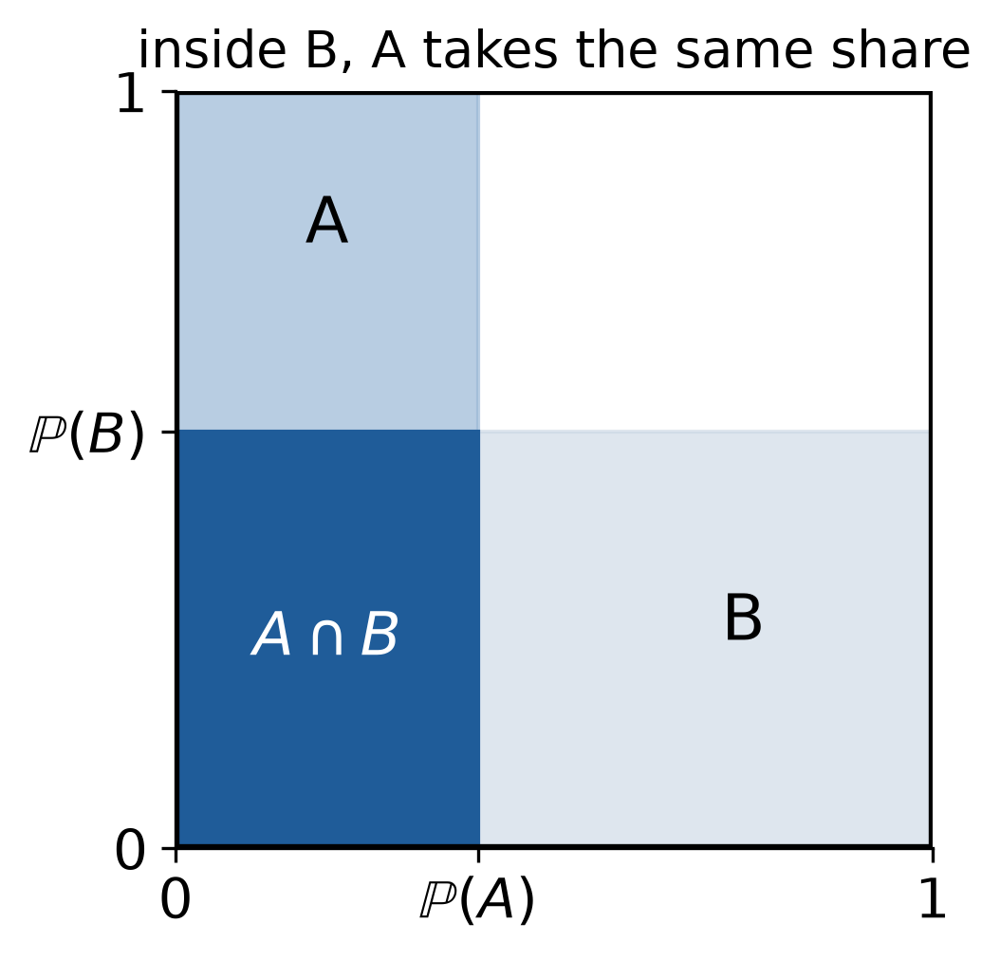
Check the product rule for the store: \[\Prob(A)\,\Prob(B)=0.40\cdot0.55=0.22\]
But \(\Prob(A\cap B)=0.20\ne 0.22\). Not independent.
App customers use promo codes a bit less often: 36% against 40% overall.
Whether a gap like 0.22 against 0.20 is real or noise in one day of orders is a question for module 3.
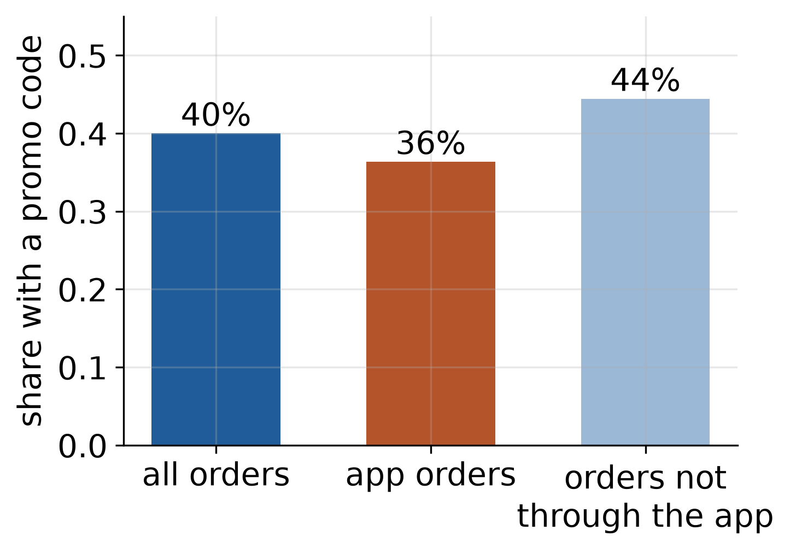
In practice independence is usually assumed, not computed. You assume it when there is a physical reason.
Fine to assume: two customers who do not know each other, two machines on separate power lines, two tosses of a coin.
Be suspicious otherwise. Rain on Monday and rain on Tuesday are not independent, and neither are defaults of two firms in the same industry.
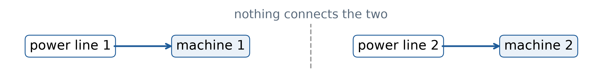
Both sound like “nothing to do with each other”. They are close to opposites.
Mutually exclusive, both with positive probability: \(\Prob(A\cap B)=0\) but \(\Prob(A)\Prob(B)>0\). So they are dependent.
A shop in Tula: a customer pays by card (0.8) or in cash (0.2), never both. Learning “card” pushes cash from 0.2 to 0.
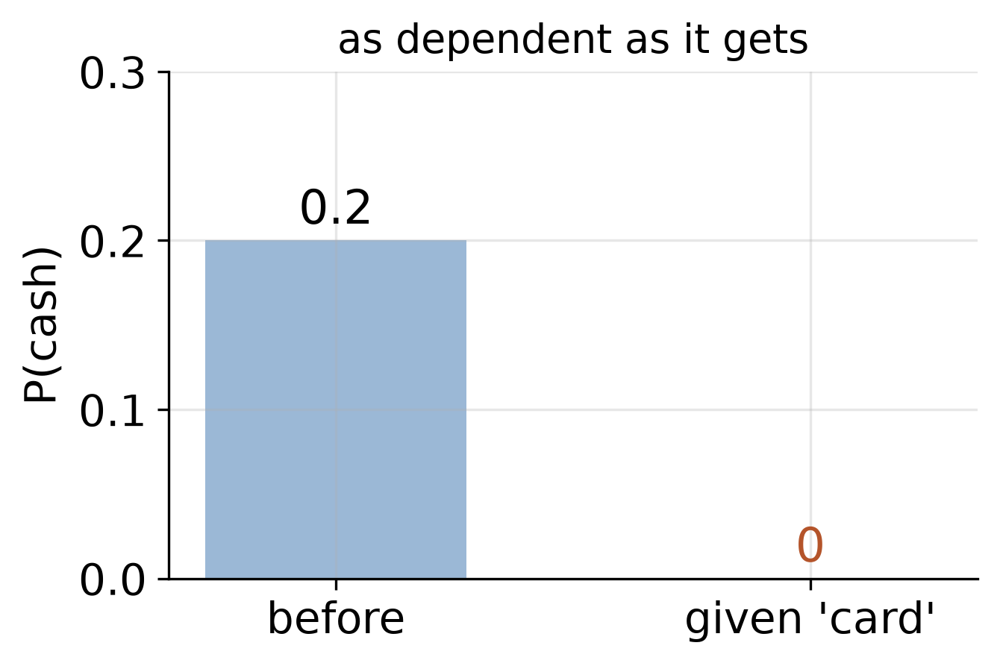
Check: \(\Prob(A)=0.2\), \(\Prob(B)=0.3\), mutually exclusive. Independent? No: \(0\ne0.06\).
If \(A\) and \(B\) are independent, so are \(A\) and \(B^c\), \(A^c\) and \(B\), and \(A^c\) and \(B^c\).
Idea. \(\Prob(A\cap B^c)=\Prob(A)-\Prob(A)\Prob(B)=\Prob(A)\Prob(B^c)\). Repeat with roles swapped.
This makes “none of them” easy: \[\Prob(\text{neither})=\big(1-\Prob(A)\big)\big(1-\Prob(B)\big),\] and “at least one” is 1 minus that.
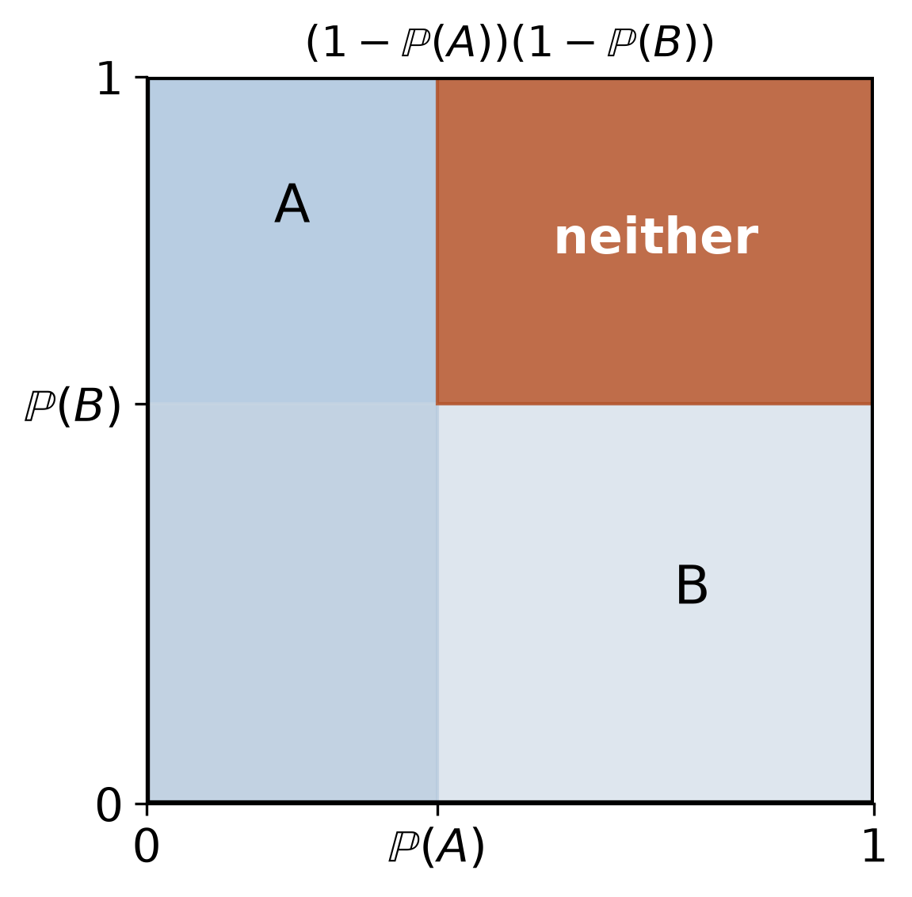
\(A\) and \(B\) are independent, \(\Prob(A)=0.3\) and \(\Prob(B)=0.5\). Find \(\Prob(A\cup B)\) and the probability that neither occurs.
By Thm 1.2 and independence: \[\Prob(A\cup B)=0.3+0.5-0.3\cdot0.5=\color{#b4542a}{\mathbf{0.65}}\] Neither, by Thm 2.3: \[\Prob(A^c\cap B^c)=0.7\cdot0.5=\color{#b4542a}{\mathbf{0.35}}\] Check: \(0.65+0.35=1\), as it should be.
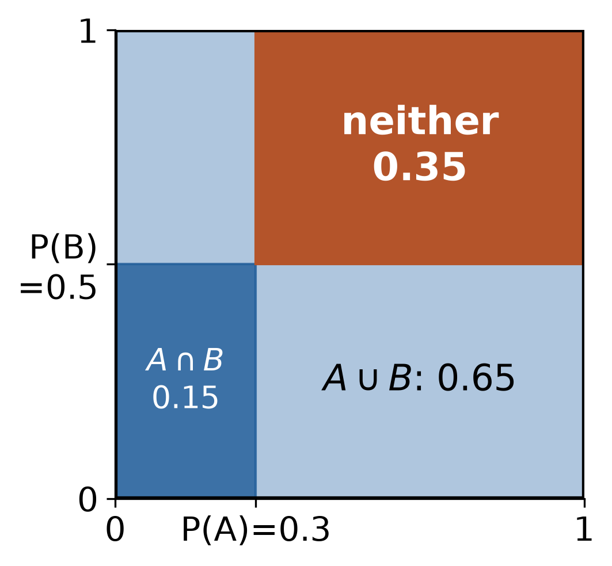
\(A_1,\dots,A_n\) are mutually independent if for every choice of two or more of them \(\Prob(A_{i_1}\cap\dots\cap A_{i_k})=\Prob(A_{i_1})\cdots\Prob(A_{i_k})\).
Examples: repeated coin tosses, answers of unrelated customers. Complements may replace any of the \(A_i\) (used without proof).
Three suppliers, each late with probability 0.1, independently: \[\Prob(\text{at least one late})=1-0.9^3=\color{#b4542a}{\mathbf{0.271}}\]
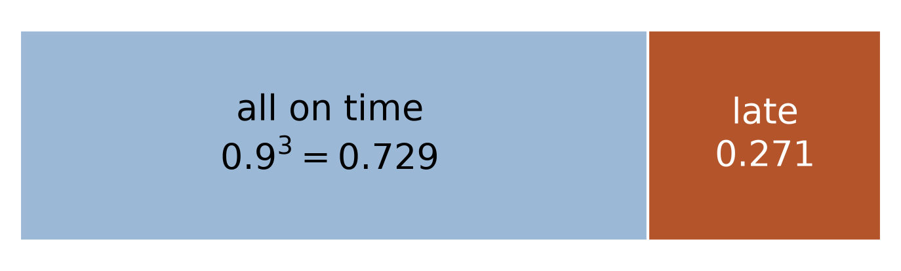
Two tosses of a fair coin: four outcomes, \(1/4\) each. Each event has probability \(1/2\).
Every pair meets only in HH:
\(\Prob(\text{both})=\frac14=\frac12\cdot\frac12\) for each pair.
Pairwise independent.
All three also meet only in HH:
\(\Prob(A\cap B\cap C)=\frac14\), not \(\frac18\)
\(A\) and \(B\) tell you \(C\) for sure.
In this course “independent” for several events always means mutually independent.
Write down a “random” sequence of six coin tosses, H or T, without tossing. Does it contain a run of three or more equal results in a row?
Few people write one. A real coin gives such a run with probability \[\frac{38}{64}\approx\color{#b4542a}{\mathbf{0.59}}.\]
People avoid runs because runs “don’t look random”.
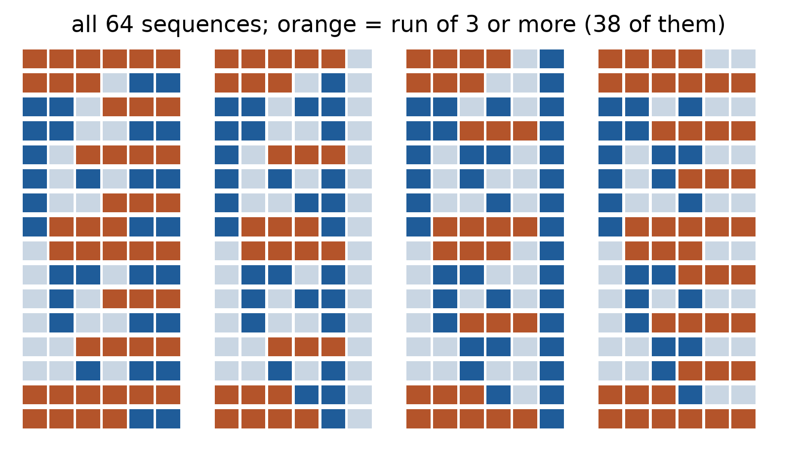
A fair coin, six independent tosses. (a) P(TTTTTT)? P(HHHHHT)? (b) P(five heads and one tail, in any order)?
(a) Each fixed sequence: \((1/2)^6=\) 1/64, six tails included.
(b) The tail has 6 possible positions: six mutually exclusive sequences, \(6/64=\) 3/32.
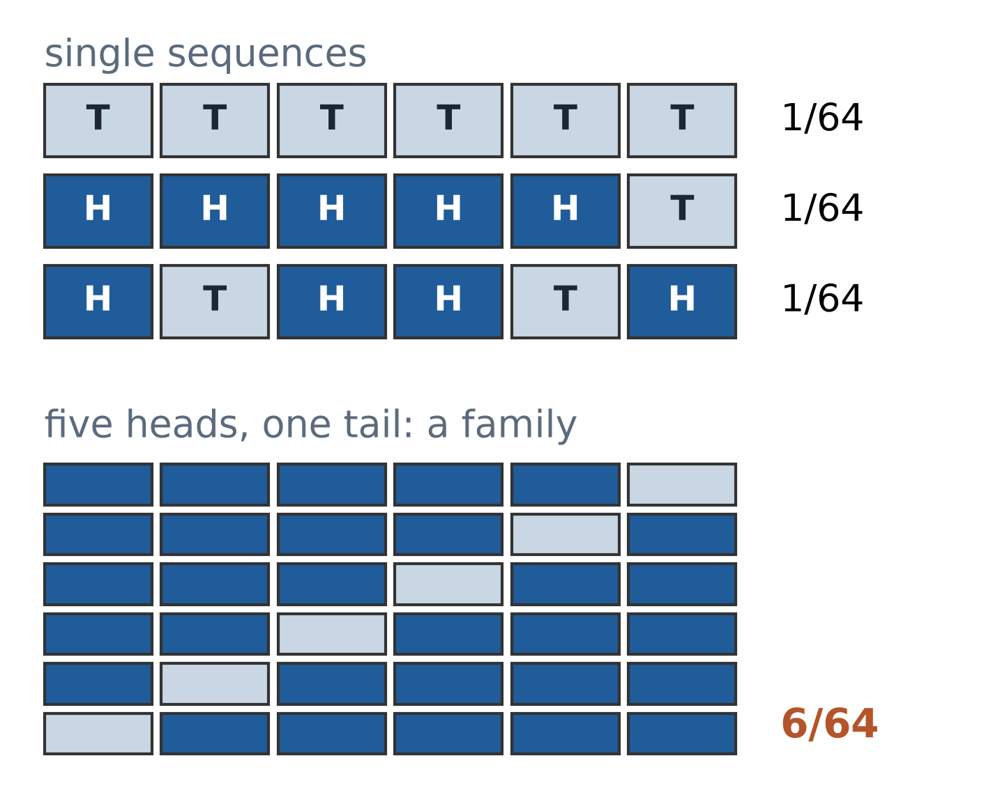
(c) Five tails so far. \(T_i\): toss \(i\) is tails, \(H_6\): toss 6 is heads.
\[\Prob(H_6\mid T_1\cap\dots\cap T_5)=\frac{\Prob(T_1\cap\dots\cap T_5\cap H_6)}{\Prob(T_1\cap\dots\cap T_5)}=\frac{1/64}{1/32}=\color{#b4542a}{\mathbf{1/2}}\]
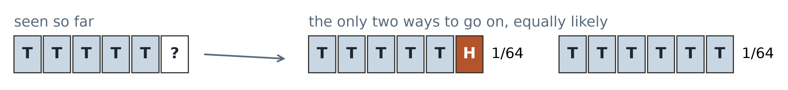
The coin has no memory. Believing that heads is “due” is the gambler’s fallacy. Part of it is mixing (a) with (b): HTHHTH is as rare as six tails.
Unrelated firms. A hypothetical bank in Novosibirsk approves 30% of applications. The officer just rejected five in a row (\(0.7^5\approx0.17\), not rare).
The sixth: still 0.30. Like the coin, her queue has no memory.
One firm, five banks. The five rejections tell you something about the application, and the sixth bank will probably reject it as well.
They share a cause, so they are not independent.
Bayes’ theorem, at the end of this lecture, is the tool for that kind of reasoning.
Back in 10 minutes.
Rates are often easy within groups: per supplier, per segment.
Let \(H_1,\dots,H_n\) be a partition of \(\Omega\) (Def 1.3: no two overlap, together they make up \(\Omega\)), all \(\Prob(H_i)>0\). Then \[\Prob(A)=\sum_{i=1}^n\Prob(A\mid H_i)\,\Prob(H_i).\]
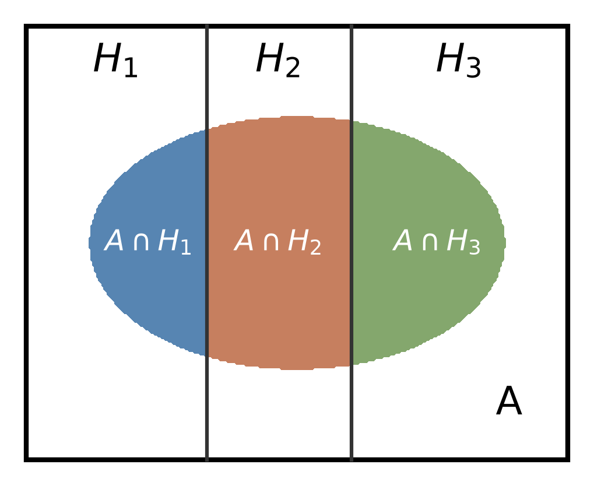
Idea. Add the disjoint pieces \(A\cap H_i\) (axiom 3) and use Thm 2.2 on each of them.
On a tree. First level: the partition \(H_1,\dots,H_n\). Second level: \(A\) or not \(A\). Then \(\Prob(A)\) is the sum over the paths that end in \(A\), as for the second bulb.
As an average. \(\Prob(A)\) is a weighted average of the group rates \(\Prob(A\mid H_i)\), with the group sizes \(\Prob(H_i)\) as weights.
So \(\Prob(A)\) always lies between the smallest and the largest rate.
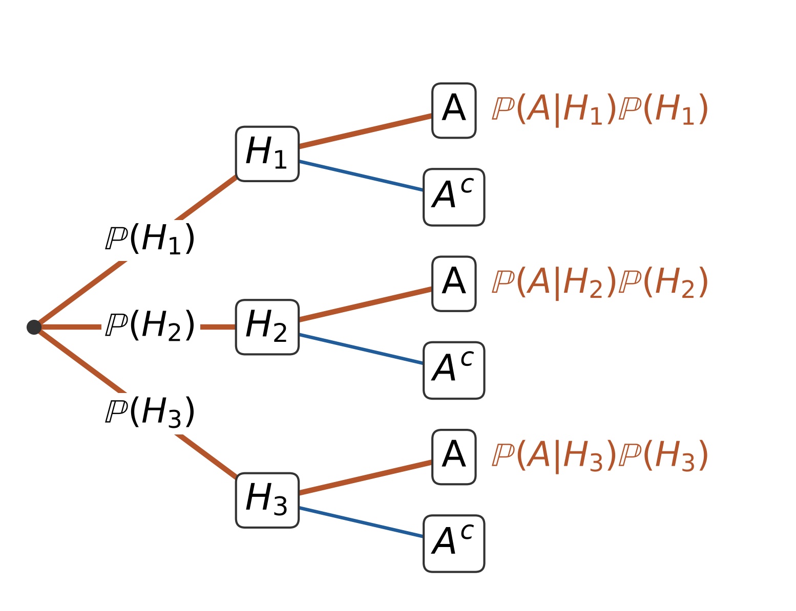
A hypothetical marketplace seller in Yekaterinburg: 60% of the phone cases come from Guangzhou, 40% from a workshop in Chelyabinsk (90 rubles dearer per case).
3% of Guangzhou cases are defective, 1.5% of Chelyabinsk ones. P(a random case is defective)?
Branches carry the conditional rates. The two orange paths end in a defect.
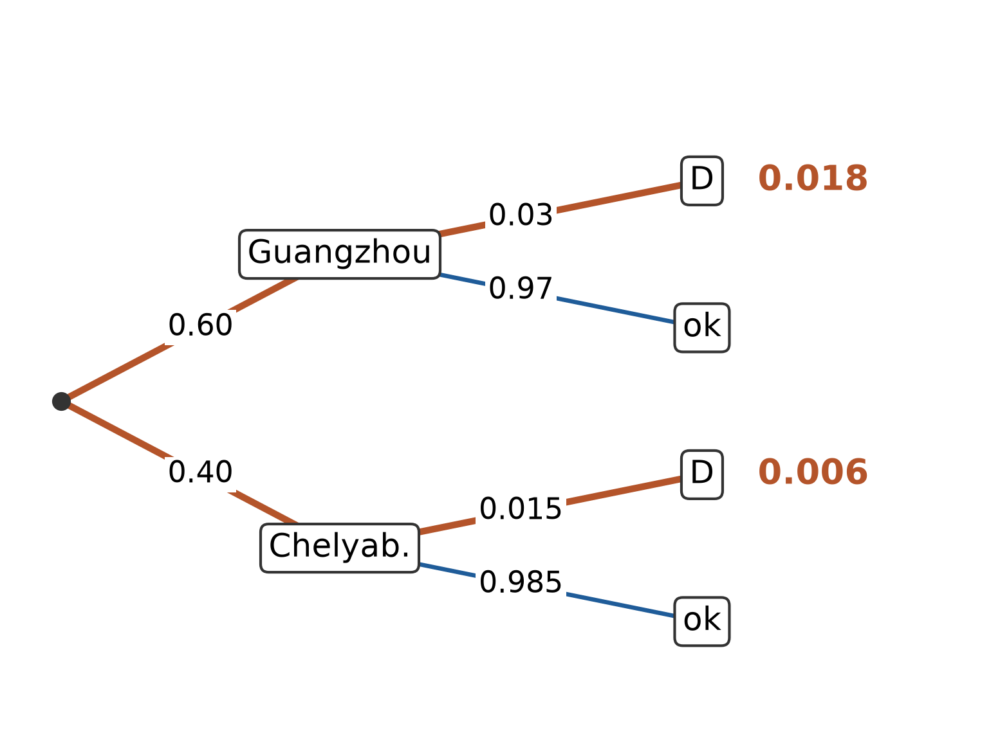
\(H_1\): Guangzhou, \(H_2\): Chelyabinsk (a partition). \(D\): defective.
\[\begin{aligned}\Prob(D)&=0.03\cdot0.60+0.015\cdot0.40\\&=0.018+0.006=\color{#b4542a}{\mathbf{0.024}}\end{aligned}\]
2.4% is between 1.5% and 3%, and closer to 3%, because Guangzhou supplies more.
In counts: of 1000 cases, 18 + 6 = 24 are defective.
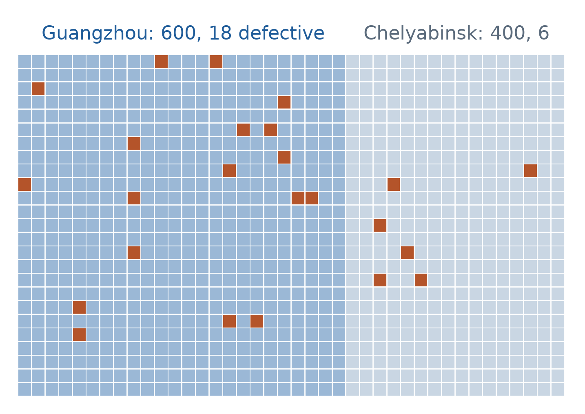
A hypothetical online school of English. Pricing-page visitors: 50% new, 35% returning, 15% referred. They buy at rates 2%, 8%, 12%. (a) What share of all visitors buy?
The segments are a partition. By Eq 2.2: \[\begin{aligned}&0.02\cdot0.50+0.08\cdot0.35+0.12\cdot0.15\\&=0.010+0.028+0.018=\color{#b4542a}{\mathbf{0.056}}\end{aligned}\]
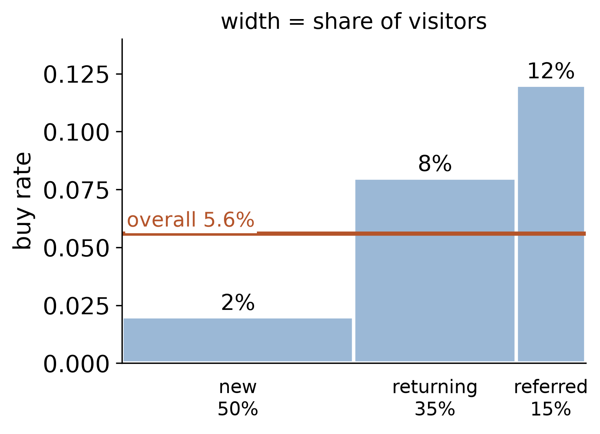
(b) A referral campaign changes the mix to 35% new, 35% returning, 30% referred. The rates in each segment stay the same.
Same rates, new weights: \[\begin{aligned}&0.02\cdot0.35+0.08\cdot0.35\\&\quad+0.12\cdot0.30\\&=0.007+0.028+0.036\\&=\color{#b4542a}{\mathbf{0.071}}\end{aligned}\]
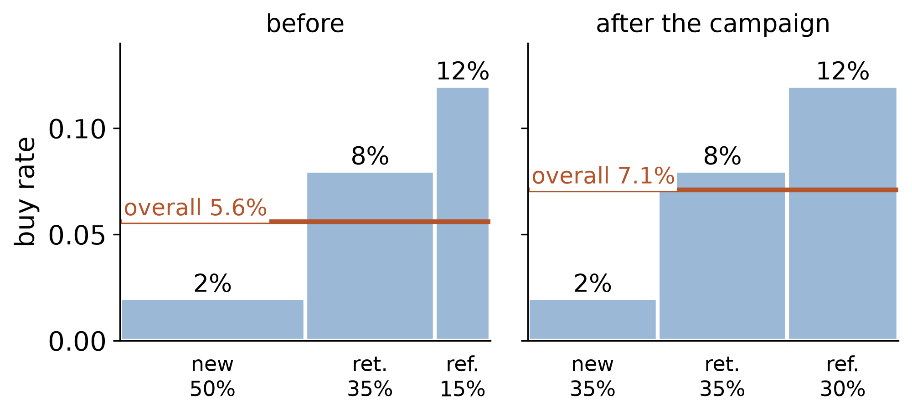
After the referral campaign of (b), overall conversion rose from 5.6% to 7.1%. Marketing teams like to report this as “the new landing page works”. Wrong.
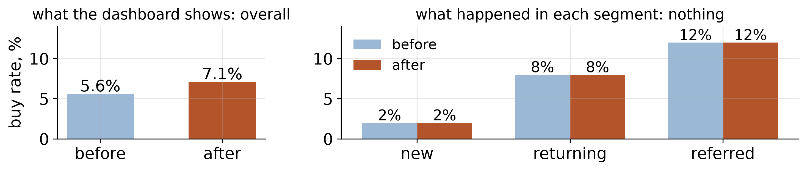
Not one segment converts better than before. Only the mix changed. When one overall rate moves, first ask whether the rates moved or the mix did.
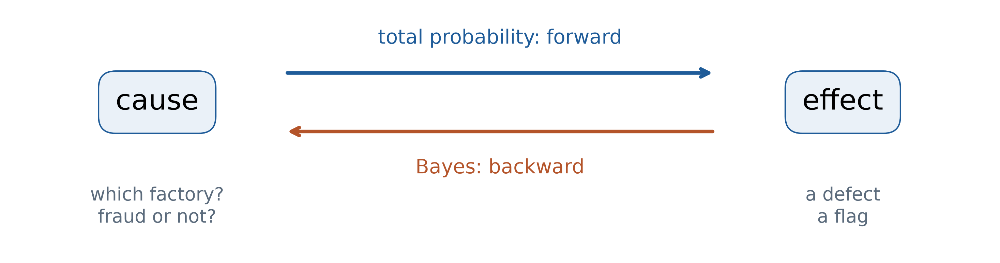
The law of total probability goes from the cause to the effect. In practice we often see the effect and want the cause. This case is defective: which factory made it? This payment was flagged: is it fraud? Bayes’ theorem turns the conditioning around.
Let \(H_1,\dots,H_n\) be a partition of \(\Omega\), all \(\Prob(H_i)>0\), \(\Prob(A)>0\). Then for each \(k\) \[\Prob(H_k\mid A)=\frac{\Prob(A\mid H_k)\,\Prob(H_k)}{\sum_{i=1}^n\Prob(A\mid H_i)\,\Prob(H_i)}.\] Two events, \(\Prob(A),\Prob(B)>0\): \(\;\Prob(B\mid A)=\Prob(A\mid B)\,\Prob(B)/\Prob(A)\).
Idea. Start from \(\Prob(H_k\cap A)/\Prob(A)\). Numerator by Thm 2.2, denominator by Eq 2.2.
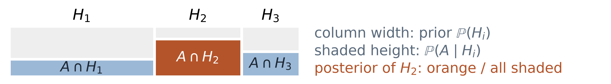
\[\Prob(H_k\mid A)=\frac{\overbrace{\Prob(A\mid H_k)}^{\text{how well }H_k\text{ explains }A}\cdot\overbrace{\Prob(H_k)}^{\text{prior}}}{\underbrace{\textstyle\sum_i\Prob(A\mid H_i)\,\Prob(H_i)}_{\text{the same for every }k}}\]
The prior \(\Prob(H_k)\): what we believe before we see \(A\).
The posterior \(\Prob(H_k\mid A)\): what we believe after.
The denominator only makes the posteriors add up to 1.
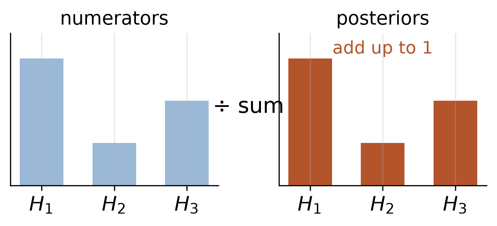
A defective case comes back (Ex 2.5). By Eq 2.3: \[\Prob(H_1\mid D)=\frac{0.03\cdot0.60}{0.024}=\color{#b4542a}{\mathbf{0.75}}\] and \(\Prob(H_2\mid D)=0.006/0.024=0.25\).
In counts: 18 of the 24 defective cases are from Guangzhou.
Defects are twice as common there, so a defect points to Guangzhou. Not proof: one in four is from Chelyabinsk.
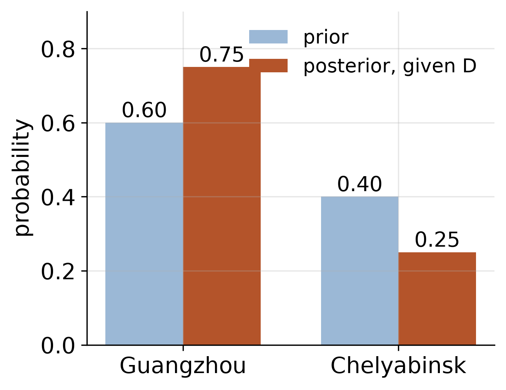
A hypothetical bank processes 100,000 card payments a day; 0.2% are fraudulent. Its filter flags 99% of frauds and also 1% of legitimate payments. The vendor’s brochure calls this “99% accurate”. A payment has just been flagged. What is the probability that it is fraud?
Gerd Gigerenzer and co-authors put questions like this one, about screening tests, to doctors. Most of the doctors in their studies got them wrong (Gigerenzer et al., 2007).
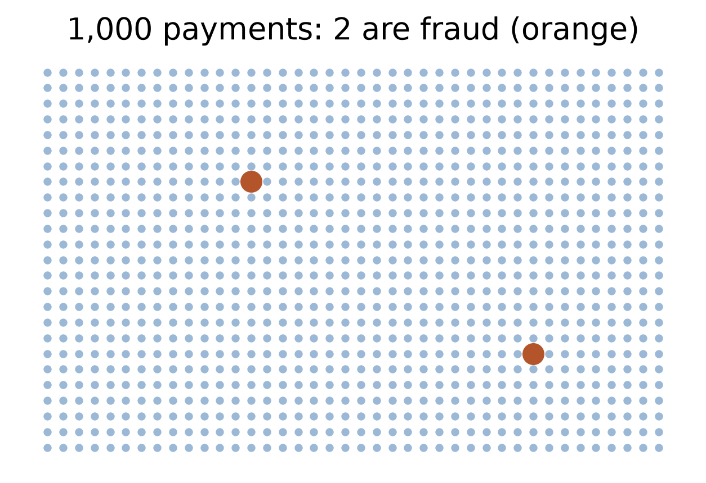
\(F\): fraudulent, \(L\): flagged. \(\Prob(F)=0.002\), \(\Prob(L\mid F)=0.99\), \(\Prob(L\mid F^c)=0.01\). Partition: \(F\), \(F^c\).
\[\begin{aligned}\Prob(F\mid L)&=\frac{0.99\cdot0.002}{0.99\cdot0.002+0.01\cdot0.998}\\[4pt]&=\frac{0.00198}{0.00198+0.00998}\approx\color{#b4542a}{\mathbf{0.166}}\end{aligned}\]
Only about one flagged payment in six is fraud.
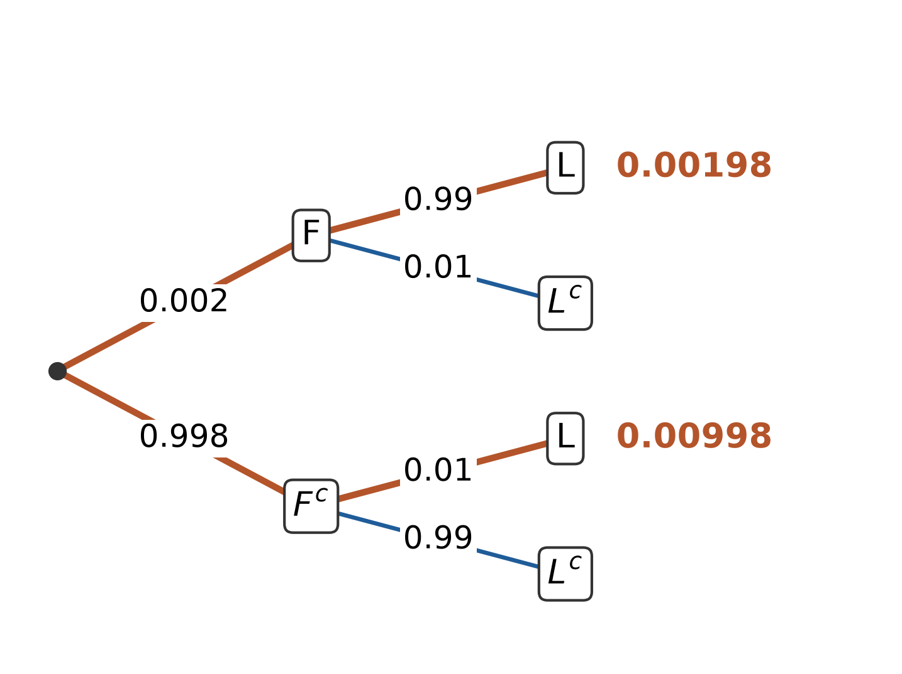
One day of 100,000 payments:
| Flagged | Not flagged | Total | |
|---|---|---|---|
| Fraudulent | 198 | 2 | 200 |
| Legitimate | 998 | 98,802 | 99,800 |
| Total | 1,196 | 98,804 | 100,000 |
Read it row by row first: the filter flags 198 of the 200 frauds, the 99% from the brochure.
Then read down the “Flagged” column: of the 1,196 flags, 198 are fraud, \(198/1196\approx\) 0.166.
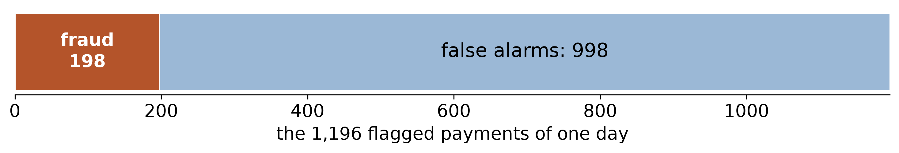
There are so many legitimate payments, 99,800, that 1% of them gives 998 false alarms, five times as many as the 198 real ones.
The base rate is the share of all cases that really have the property: here 0.2% of payments are fraud. It matters as much as the accuracy of the test.
Whenever the thing you look for is rare, expect most alarms to be false, even from a good test.
The filter is not useless.
Prior: \(\Prob(F)=0.002\). Posterior: \(\Prob(F\mid L)\approx0.166\). More than 80 times higher.
A flag is strong evidence, but not a verdict. This is why the bank sends you an SMS to confirm a flagged payment instead of blocking your card.
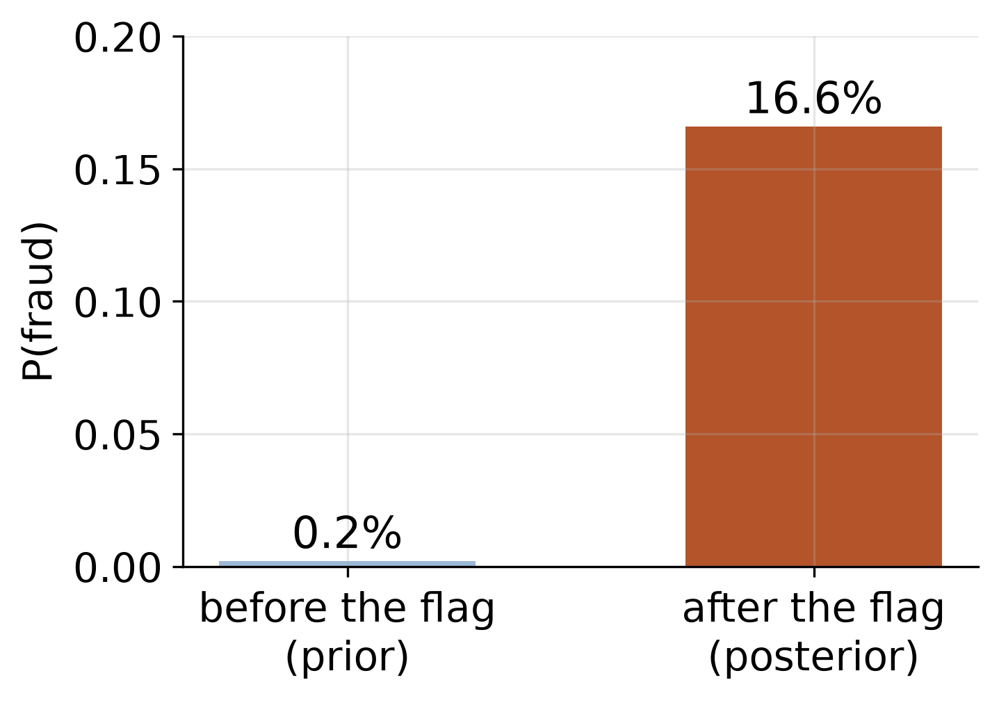
Wrong. “The filter is 99% accurate, so a flagged payment is fraud with probability 0.99.”
Right. 0.99 is \(\Prob(L\mid F)\). The question asks for \(\Prob(F\mid L)\approx0.166\).
The same swap as in Ex 2.1. In court it is called the prosecutor’s fallacy: the court treats \(\Prob(\text{evidence}\mid\text{innocent})\) as if it were \(\Prob(\text{innocent}\mid\text{evidence})\).
It appeared in the 1999 trial of Sally Clark in England, with a worse mistake: the expert squared the probability of one sudden infant death to get two, as if two deaths in one family were independent. Her conviction was overturned in 2003, mainly because of medical evidence that had not been disclosed.
Priya runs a courier service. On 30% of days the weather is bad. Then 20% of deliveries are late, on other days 5%. P(a delivery is late)? A delivery was late: P(bad weather)?
\[\Prob(\text{late})=0.2\cdot0.3+0.05\cdot0.7=\color{#b4542a}{\mathbf{0.095}}\]
\[\Prob(\text{bad}\mid\text{late})=\frac{0.06}{0.095}\approx\color{#b4542a}{\mathbf{0.632}}\]
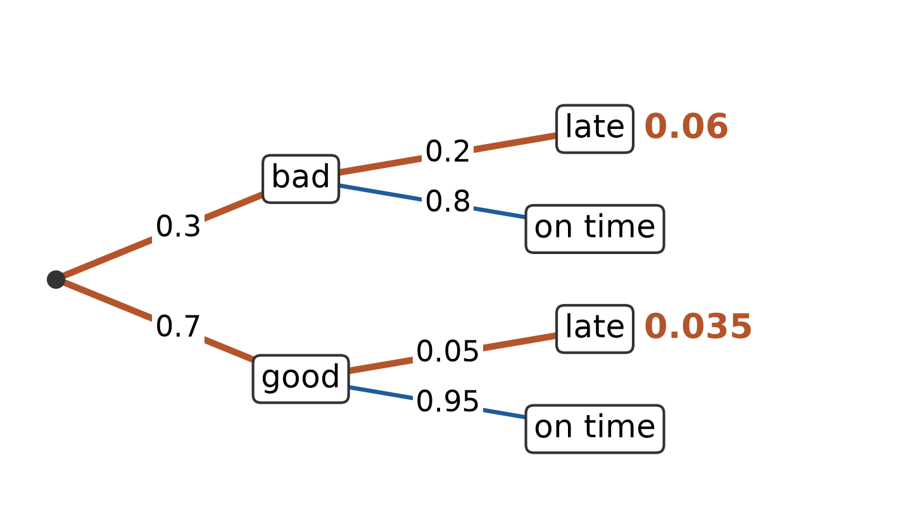
Find the mistake. “An HR screening test is passed by 90% of strong candidates and by 20% of weak ones. 30% of applicants are strong. Ilya passed the test, so he is a strong candidate with probability 90%.”
90% is \(\Prob(\text{pass}\mid\text{strong})\). The question asks for \(\Prob(\text{strong}\mid\text{pass})\):
\[\begin{aligned}\Prob(\text{strong}\mid\text{pass})&=\frac{0.9\cdot0.3}{0.9\cdot0.3+0.2\cdot0.7}\\&=\frac{0.27}{0.41}\approx\color{#b4542a}{\mathbf{0.659}}\end{aligned}\]
The swap again, the same one as in Ex 2.1 and Ex 2.8.
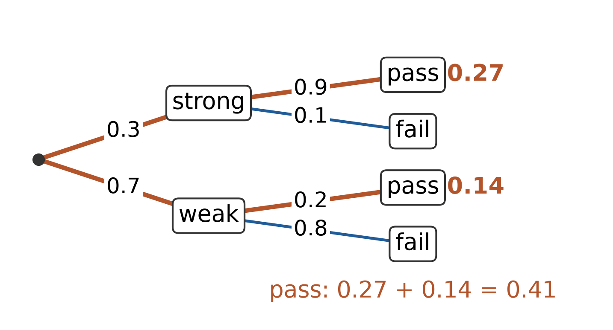
Probability Theory and Mathematical Statistics · HSE 2026/27